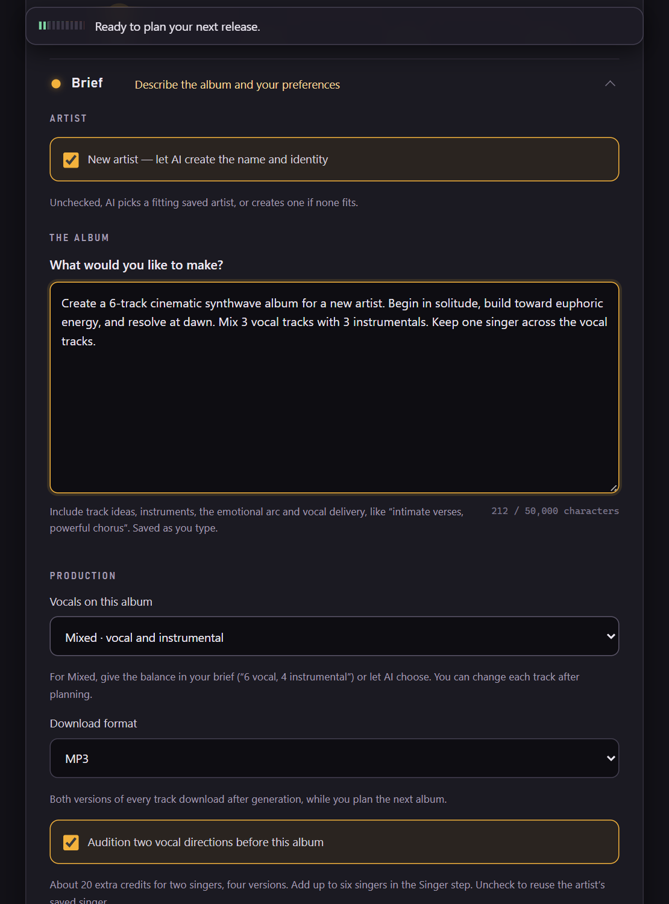

Step 1 of 4
Brief
Describe the record you want, in your own words.
- You decide
- The concept, genre and mood, the mix of vocal and instrumental tracks, and how many tracks.
- Albumwright plans
- The artist identity, the tracklist, and a mood and energy arc for every track.
- A Suno credit estimate, shown before anything is spent.
